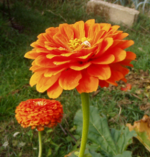
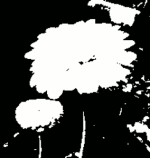
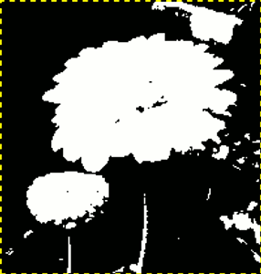

The Threshold filter transforms the current layer or the selection into a black and white image, where white pixels represent the pixels of the image where the value for the chosen Channel is in the threshold range, and black pixels represent pixels with a value outside the threshold range.
You can use it to enhance a black and white image (scanned text for example) or to create selection masks.
![[Note]](images/note.png)
|
Note |
|---|---|
|
As this filter creates a black and white image, the anti-aliasing of the original image disappears. If this poses a problem, use the Levels tool instead. |
-
You can access this command from the main menu through → .
-
You can also access it by clicking the tool icon
 in the Toolbox if Threshold has been enabled as a tool (which is
disabled by default). For this,
please refer to Section 6.13, “Toolbox”.
in the Toolbox if Threshold has been enabled as a tool (which is
disabled by default). For this,
please refer to Section 6.13, “Toolbox”.
- Presets, Blending Options, Preview, Merge filter, Split view
-
Note These options are described in Section 8.1.2, “Colors Common Features”.
- Channel
-
This allows you to select which channel(s) will be used to apply the Threshold. The default is Value, which will use all color channels, but you can also choose to use a single channel: Red, Green, Blue and Alpha (only available when the layer has an alpha channel), Luminance, or RGB.
-
 Linear histogram
,
Linear histogram
,
 Logarithmic histogram
Logarithmic histogram
-
These two buttons to the right of the Channel selection let you choose the type of histogram shown.
- Threshold range
-
The Threshold tool provides a visual graph, a histogram, of the intensity value of the active layer or selection. You can set the threshold range either using the minimum and maximum input boxes, or by clicking and dragging on the graph. It allows you to select a part of the image with some intensity from a background with another intensity. Pixels inside the range are white, and the others are black. Adjust the range to get the selection you want in white on black background. The button can be used to automatically adjust the threshold.
Sometimes an element you want to extract from an image can stand out well against the background. In this case, you can use the Threshold tool to select this element as a whole, and then use a Quick mask.
-
First start decomposing your image into its RGB and HSV components by using the Decompose filter. A new grayscale image is created and the components are displayed as layers in the Layers Dialog. These layers come with a thumbnail but it is too small for an easy study. You can, of course, increase the size of this preview with the dialog menu (the small triangular button), but playing with the “eyes” is more simple to display the wanted layer in the decompose image. Select the layer that isolates the element the best.
Figure 16.219. The original image, the decompose image and its Layers dialog



-
Call the Threshold tool from the decompose image. By moving the black cursor, fit threshold to isolate the best the element you want to extract. This will probably not be perfect: we will enhance the result with the selection mask we are going to create.
![[Warning]](images/warning.png)
Warning Make sure you have selected the right layer when you call the Threshold tool: when it is opened, you can't change to another layer.
Figure 16.220. The selected layer after threshold fit

We got the best outline for our flower. There are several red objects which we must remove.
-
Make sure the image displaying the selected layer is active and copy it to the clipboard with Ctrl+C.
-
Now, make the original image active. Click the button at the bottom-left corner of the image window: the image gets covered with a red (default) translucent mask. This red color does not suit well to our image with much red: go to the Channels dialog, activate the “Quick mask” channel and change this color with the . Come back to the original image. Press Ctrl+V to paste the previously copied layer.
-
Voilà. Your selection mask is ready: you can improve the selection as usual. When the selection is ready, disable the Quick mask by clicking its button again: you will see the marching ants around the selection.
We used the Zoom to work at a pixel level, Free Select to remove large unwanted areas, the pencil (to get hard limits), black paint to remove selected areas, white paint to add selected areas, especially for stem.